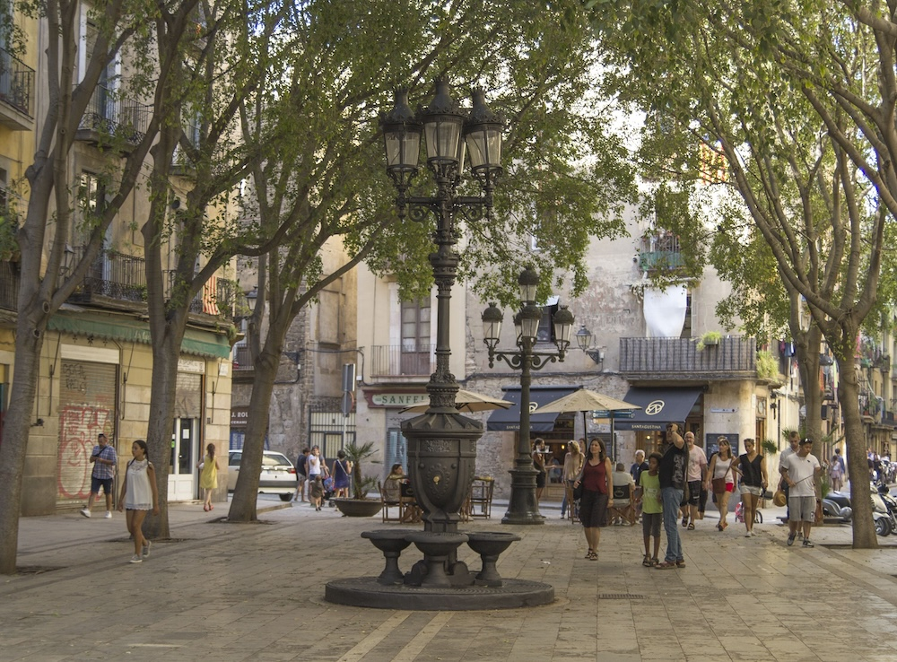
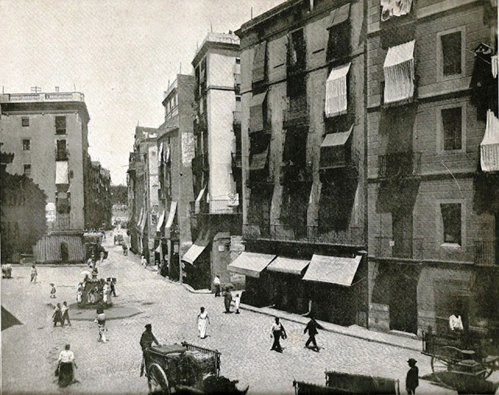
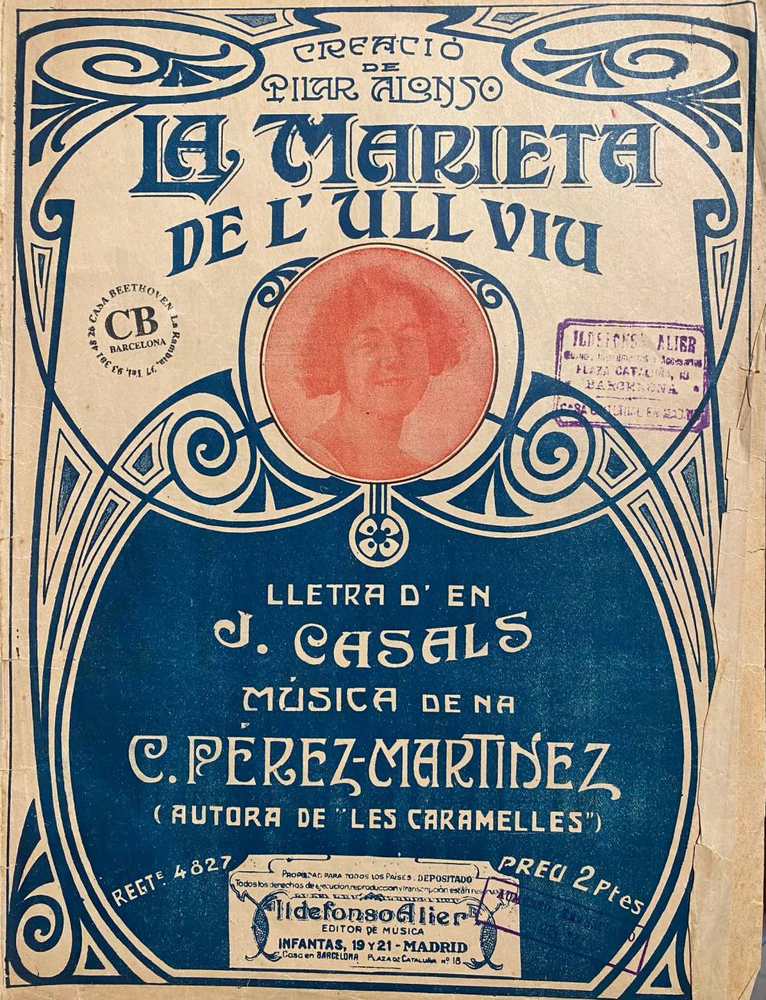

Plaça de Sant Agustí Vell, 19 2º (1864-1868)
Audioguia
Prem play per escoltar la història
La plaça
Cap al 1865, la plaça de Sant Agustí Vell era un espai molt actiu al cor del barri de la Ribera.
Més que una plaça monumental, funcionava com un punt de trobada quotidià, envoltada de petits comerços, tallers i vida veïnal.
Era un lloc popular, dinàmic i molt transitat, reflex de la vida diària en una Barcelona densa i encara prèvia a les grans transformacions urbanes.

Història familiar
En aquests anys, la vida de la família Godes Caballeria va quedar marcada per una realitat molt dura: l'alta mortalitat infantil.
El 1864 va néixer Avelina Godes Caballeria, però va morir tot just un any després.
El juny de 1866 va néixer Vicent Godes, el quart fill, que també moriria amb només dos anys.
En aquest context, la Dolors era l'única filla que aconseguia sobreviure, fet que avui ens sembla excepcional però que aleshores era tristament habitual.
Marieta de l'ull viu
En un extrem de la plaça de Sant Agustí Vell hi ha avui una font vinculada a la cançó popular «La Marieta de l'ull viu».
Aquesta, però, no és la seva ubicació original. L'antiga font-abeurador, coneguda com la Font dels Traginers, es trobava entre els carrers Carders i Tantarantana, on veïns, traginers i soldats portaven a beure els animals.
La tradició explica que una noia del carrer Carders hi anava a buscar aigua amb el càntir i aprofitava per trobar-se amb un soldat del quarter proper. D'aquest petit romanç popular naixeria la història de la Marieta de l'ull viu.
Durant la restauració de la font va aparèixer incrustada en un dels seus brocs la figura d'un gat. Aquesta troballa va permetre identificar el lloc de l'antiga Font del Gat, esmentada a la cançó «Baixant de la Font del Gat», i recuperar la memòria popular lligada a aquest racó del barri.

Context Espanya
El 1868 esclata la Revolució Gloriosa, un aixecament que provoca la caiguda de la reina Isabel II i la fi del seu regnat.
S'inicia aleshores un període de canvis polítics a la recerca d'un nou model de govern més representatiu.
Context Barcelona
El 1864, Barcelona va patir una greu epidèmia de còlera, una malaltia estretament lligada a les males condicions sanitàries de l'època.
L'alta densitat de població, la manca de clavegueram modern i l'accés limitat a aigua potable en van facilitar la propagació, especialment als barris més populars.
L'epidèmia va deixar milers de víctimes i va posar de manifest la necessitat urgent de millorar les infraestructures i la salubritat de la ciutat.
Consulta de l'Arxiver
Qui va governar Espanya després de la Revolució Gloriosa de 1868?